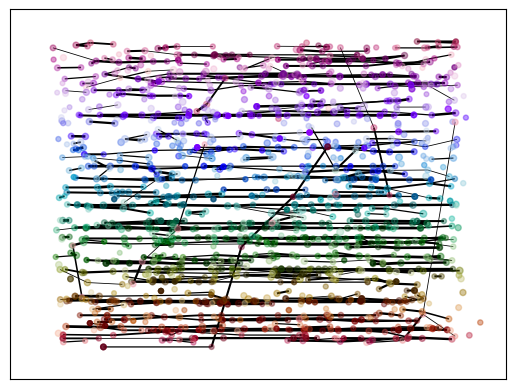
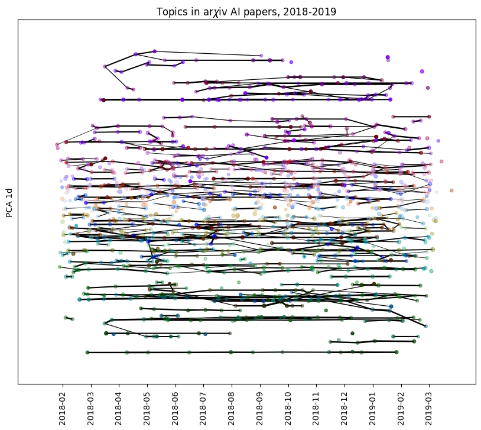
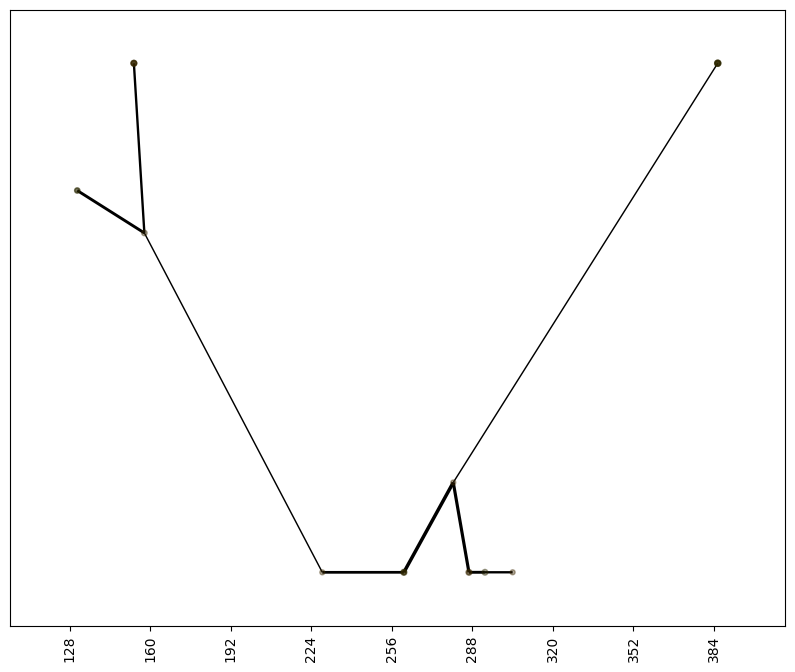
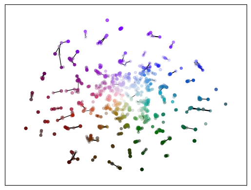
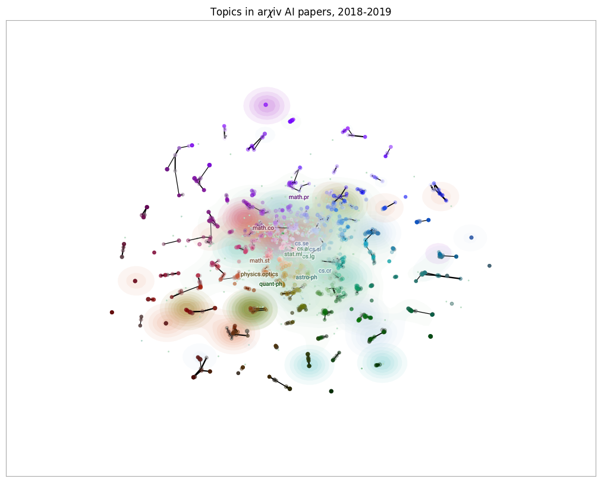
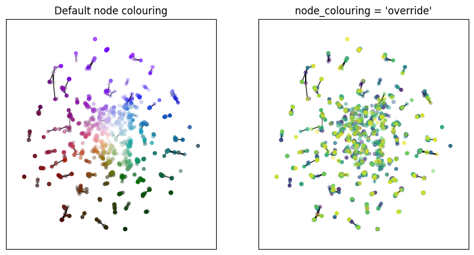

Visualizing TemporalMapper Graphs
Temporal Mapper constructs a graph, which does not have an inherent visualization. Moreover, if your data has \(d\) semantic dimensions, then the graph ‘naturally’ lives in \(d+1\) dimensions when including time.
Finding a sensible visualization of these graphs has proven challenging, but we’ve provided some built-in plotting utilities as a starting point for understanding the output of temporalmapper.TemporalMapper.
To demonstrate these utilities, we will fit a TemporalMapper to a small dataset of 10,000 arXiv machine learning papers. The paper’s titles and abstracts were concatenated and embedded using the sentence transformer all-mpnet-base-v2, and then reduced to 2D with UMAP.
[1]:
import temporalmapper as tm
import temporalmapper.utilities_ as tmutils
import temporalmapper.weighted_clustering as tmwc
import numpy as np
import pandas as pd
import matplotlib.pyplot as plt
import requests, io
from sklearn.cluster import DBSCAN
from hdbscan import HDBSCAN
import datamapplot as dmp
[2]:
map_data = np.load('../data/ai_arxiv_coordinates.npy')
df = pd.read_feather('../data/ai_arxiv_data.feather')
print(map_data.shape)
df.head()
(10000, 2)
[2]:
| title | abstract | id | created | authors | arxiv | doi | |
|---|---|---|---|---|---|---|---|
| 0 | automated rating of recorded classroom present... | effective presentation skills can help to succ... | 1801.00453 | 2018-01-01 | [akzharkyn izbassarova, aidana irmanova, a. p.... | cs.ai | 10.1109/icacci.2017.8125872 |
| 1 | accelerating deep learning with memcomputing | restricted boltzmann machines (rbms) and their... | 1801.00512 | 2018-01-01 | [haik manukian, fabio l. traversa, massimilian... | cs.ai | |
| 2 | accelerating deep learning with memcomputing | restricted boltzmann machines (rbms) and their... | 1801.00512 | 2018-01-01 | [haik manukian, fabio l. traversa, massimilian... | cs.lg | |
| 3 | accurate reconstruction of image stimuli from ... | in neuroscience, all kinds of computation mode... | 1801.00602 | 2018-01-02 | [kai qiao, chi zhang, linyuan wang, bin yan, j... | cs.ai | |
| 4 | deep learning: a critical appraisal | although deep learning has historical roots go... | 1801.00631 | 2018-01-02 | [gary marcus] | cs.lg |
[3]:
# Compute a time column T which is the number of days since Jan 01, 2018.
def date_to_T(date):
d0 = pd.Timestamp('2018-01-01')
delta = date-d0
return delta.days
df["date"] = pd.to_datetime(df["created"])
df["T"] = df["date"].apply(
lambda x: date_to_T(x)
)
time = df["T"].to_numpy()
[4]:
clusterer = HDBSCAN(cluster_selection_method='leaf')
TM = tm.TemporalMapper(
time,
map_data,
clusterer,
N_checkpoints = 14,
kernel=tmwc.square
)
TM.fit()
[4]:
<temporalmapper.temporal_mapper.TemporalMapper at 0x7f8e74358d60>
Time Semantic Plot
A time-semantic-plot is named for its axes; with time on the \(x\)-axis and one semantic component on the \(y\)-axis, this plot sacrifices clarity in semantic distance to explicitly plot the graph with a time axis.
Compute any 1D reduction of your data, and then call temporalmapper.utilities.time_semantic_plot, with the TemporalMapper object and your reduction as arguments:
[5]:
angle = np.arctan2(map_data[:,1], map_data[:,0])
tmutils.time_semantic_plot(TM, angle)
[5]:
<Axes: >

The optional ax argument allows you to pass a pre-made matplotlib axis, allowing you to add additional information to the plot as you wish.
[6]:
from sklearn.decomposition import PCA
from datetime import datetime, timedelta
y_axis = PCA(n_components=1).fit_transform(TM.data)
fig, ax = plt.subplots(1,1)
tmutils.time_semantic_plot(TM, y_axis, ax=ax)
label_times = TM.checkpoints
label_dates = [
(pd.Timestamp('2018-01-01')+timedelta(days=int(x))).strftime('%Y-%m')
for x in label_times
]
ax.set_xticks(label_times,labels=label_dates)
ax.tick_params(axis='x', labelrotation=90)
fig.set_figwidth(10)
fig.set_figheight(8)
ax.set_title("Topics in ar$\chi$iv AI papers, 2018-2019")
ax.set_ylabel("PCA 1d")
ax.tick_params(bottom=True, labelbottom=True)
plt.show()

For any appreciably complex dataset, the Mapper graph will be hard to interpret when it is plotted in its entirely. To plot the subgraph spanned by a list of vertices, s, you can pass the list to time_semantic_plot with vertices=s.
For example, TemporalMapper.vertex_subgraph(node) will return the subgraph spanned by all the ancestors and descendants of node.
[7]:
TM.vertex_subgraph('3:12')
[7]:
array(['10:24', '10:25', '11:15', '11:16', '12:15', '12:16', '13:16',
'1:10', '2:20', '3:12', '4:16', '4:17', '5:8', '5:9', '6:13',
'6:14', '7:6', '7:7', '8:5', '9:19', '9:20'], dtype='<U5')
We can pass this to the plotting function to see just this subgraph.
[8]:
from sklearn.decomposition import PCA
from datetime import datetime, timedelta
y_axis = PCA(n_components=1).fit_transform(TM.data)
fig, ax = plt.subplots(1,1)
tmutils.time_semantic_plot(
TM,
y_axis,
ax=ax,
vertices = TM.vertex_subgraph('3:12')
)
ax.tick_params(bottom=True, labelbottom=True)
fig.set_figwidth(10)
fig.set_figheight(8)
plt.show()

The time_semantic_plot uses networkx’s plotting functions, draw_networkx_nodes and draw_networkx_edges. If you want to further customize the look of the plot, you can pass dictionaries node_kwargs and edge_kwargs that will be passed along to these functions.
Centroid Datamap
The centroid datamap forgoes the time axis to preserve the semantic information in 2 dimensions. Each vertex of the graph is positioned at the semantic centroid of the points in the cluster it represents, leaving the edges to convey the time information.
[9]:
tmutils.centroid_datamap(TM, bundle=False)
[9]:
<Axes: >

As before, the optional ax parameter can be passed to add a centroid datamap to an existing matplotlib axis. In particular, the centroid_datamap is designed to be added on top of a datamapplot static plot, as we will now demonstrate:
[10]:
import datamapplot as dmp
fig, ax = dmp.create_plot(
TM.data,
df['arxiv'].to_list(),
label_over_points=True,
)
tmutils.centroid_datamap(TM, ax=ax, bundle=False)
fig.set_figwidth(10)
fig.set_figheight(8)
ax.set_title("Topics in ar$\chi$iv AI papers, 2018-2019")
plt.show()
Resetting positions to accord with alignment

By default, the centroid datamap matches colours with the time-semantic plot, to make it easier to relate the plots when viewing them side-by-side. To help convey the time information, vertices which correspond to earlier slices in the graph have their colour desaturated. This is a very subtle effect, so if you want to make the order of the vertices more obvious you can pass the option node_colouring = 'override'. This overrides the datamapplot colours, instead colouring vertices from dark
to light as you move from the beginning to end of the time range.
[11]:
fig, (ax1, ax2) = plt.subplots(1,2)
tmutils.centroid_datamap(
TM,
ax=ax1,
node_colouring = 'desaturate',
bundle=False
)
ax1.set_title("Default node colouring")
tmutils.centroid_datamap(
TM,
ax=ax2,
node_colouring = 'override',
bundle=False,
)
ax2.set_title("node_colouring = 'override'")
fig.set_figwidth(10)
fig.set_figheight(5)
plt.show()
